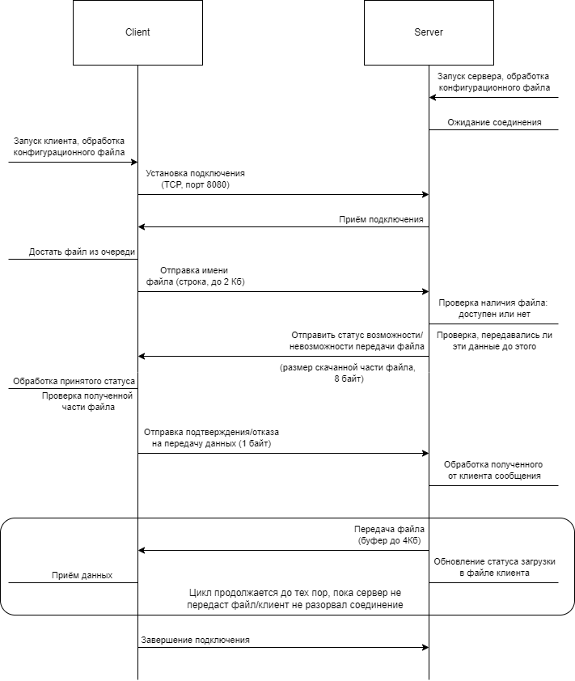

|
My Project
|
Разработать приложение для передачи файлов с поддержкой догрузки в случае разрыва соединения. Программа-клиент инициирует запрос на загрузку, отправляя программе-серверу название требуемого файла. Сервер проверяет доступность файла в заданной папке, подтверждает возможность или невозможность передачи и, если файл доступен, начинает отправку. Успешное завершение передачи подтверждается дополнительным сообщением. В ситуации преждевременного разрыва соединения необходимо предусмотреть возможно «докачки» неотправленной части файла посредством отправки специального сообщения. Размер передаваемых файлов — до 64 Гб.
На клиенте необходимо реализовать консольный интерфейс, обеспечивающий визуализацию процесса загрузки файла.
Клиент получает на вход конфигурационный файл, в котором содержится: 1) идентификатор клиента (8 байт), 2) адрес и порт сервера, к которому нужно подключиться, 3) список файлов для передачи.
В качестве входных данных серверу передаётся конфигурационный файл, в котором содержится: 1) хост и порт сервера, 2) размер буфера для считывания (до 4 Кб), 3) директория, в которой будут храниться файлы с информацией о статусе скачивания каждого файла.
